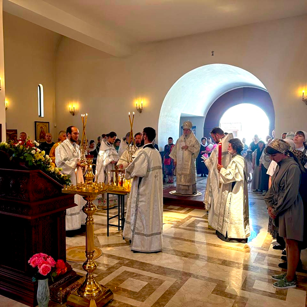
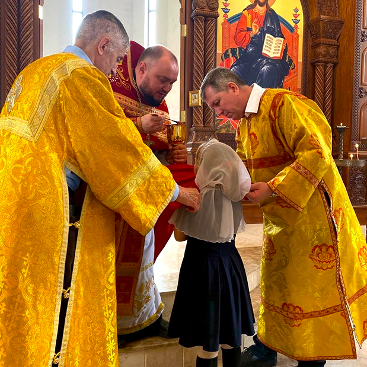

РАСПИСАНИЕ БОГОСЛУЖЕНИЙ
пятница
17:00
Всенощное бдение
суббота
8:30
Божественная литургия
17:00
Всенощное бдение
воскресенье
8:30
Божественная литургия
ТАИНСТВА


- Обедня о Здравии
- Обедня о Упокоении
- Молебен просительный
- Молебен Благодарственный
- Сорокоуст
Данные позиции заказываются лично
- Таинство крещения
- Таинство Венчания
- Отпевание
- Отпевание
Возможен заказ по телефону